Exploratory Data Analysis of Gender Relations Survey
This page provides some exploratory data analysis of Survey 195.
R EDA genderIntroduction
In addition to race relations in the Army, we are also focused on perspectives on women and gender within the military. The questions and responses are mostly geared towards WACs, which are Women's Army Corps members. In addition to survey 32, which captures textual data on gender in teh Army, a survey was given out in January of 1945 to capture perspectives of male soldiers on their WAC counterparts. This survey is survey 195B. From survey 32's textual data we have extracted insights into what topics and words male soldiers used to discuss women, and from survey 195 we have been able to identify general persepectives of soldiers on WACs.
Exploratory Data Analysis
Survey 195 has 11 larger questions about WACs in which soldiers are asked a yes/no/no answer question. We omit "No Answer" data because it does not inform us on the sentiments of soldiers and the rate of not answering questions was low. From these bar plots we can extract that most soldiers felt negatively towards WACs.
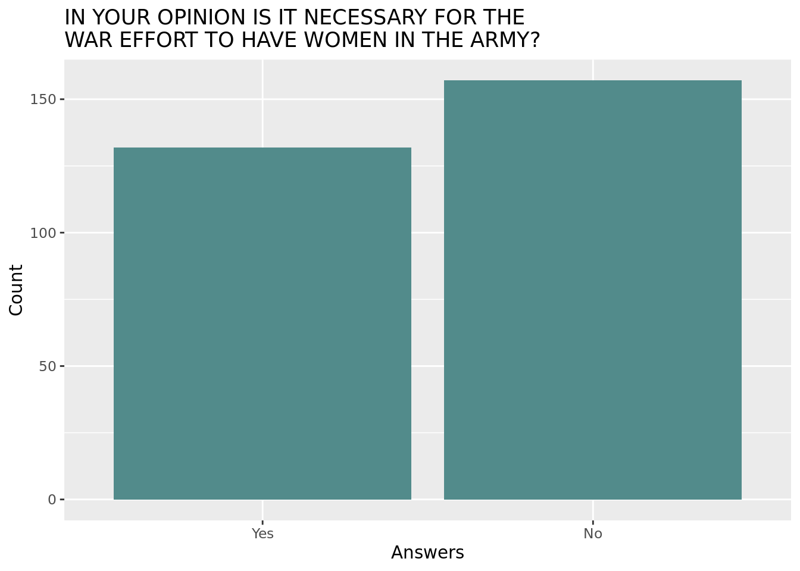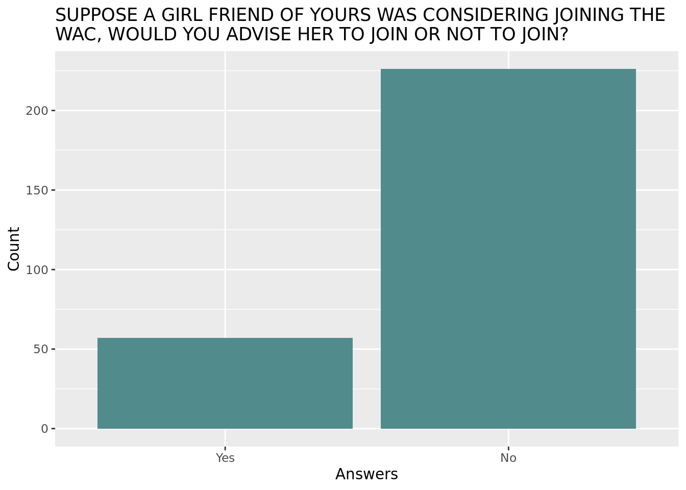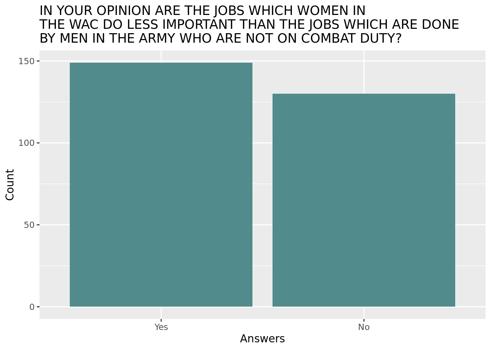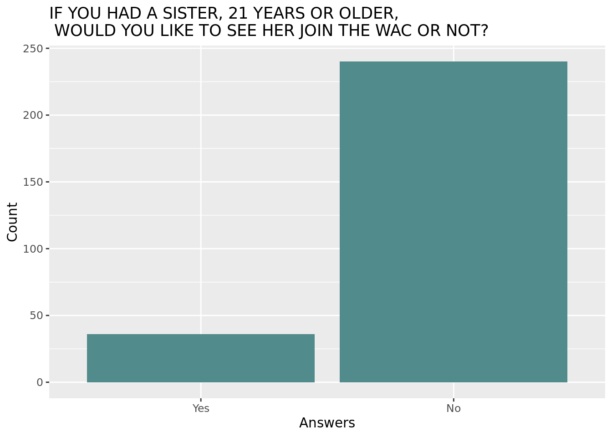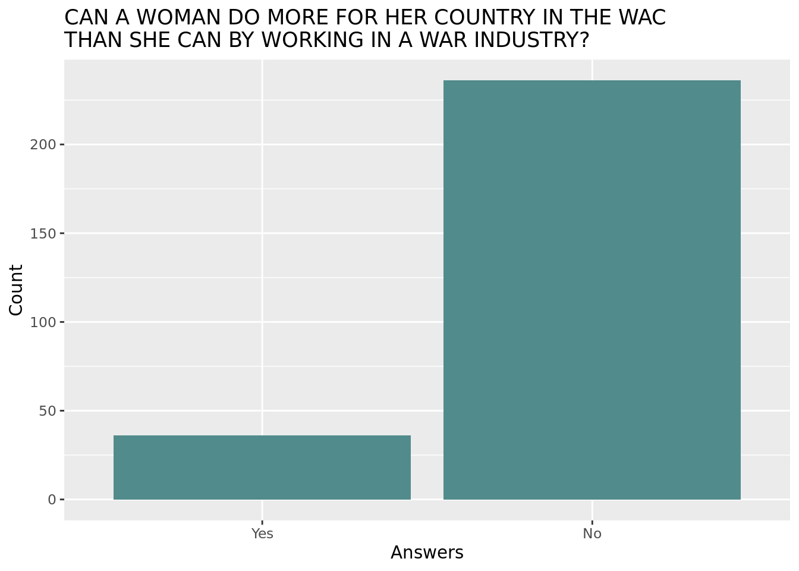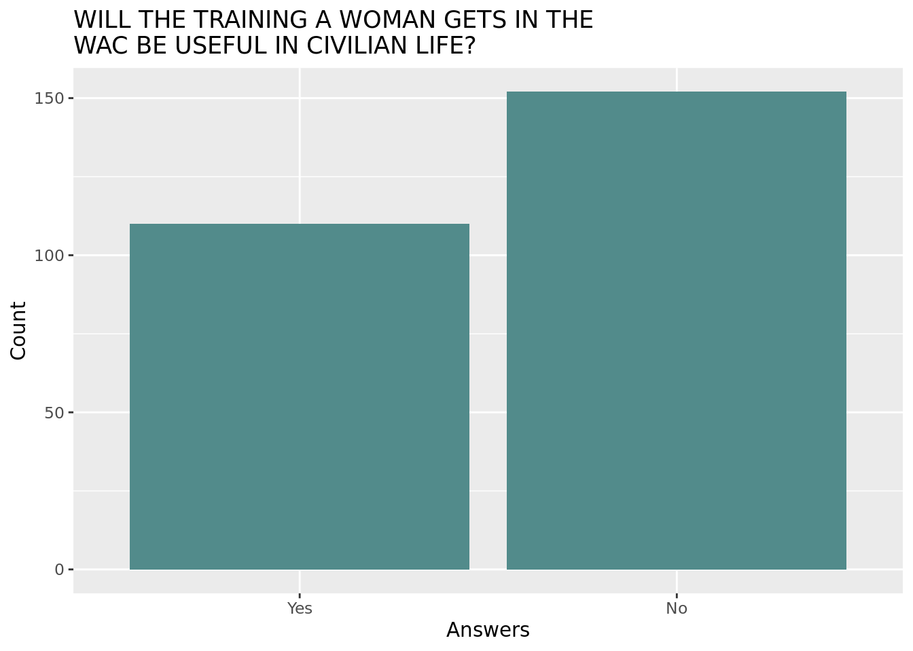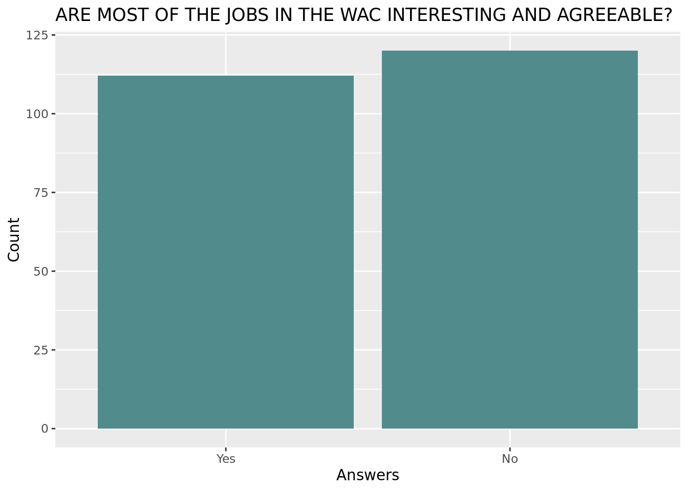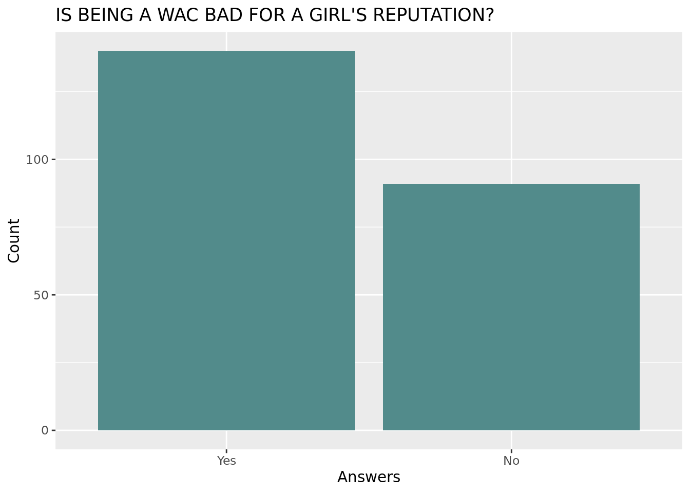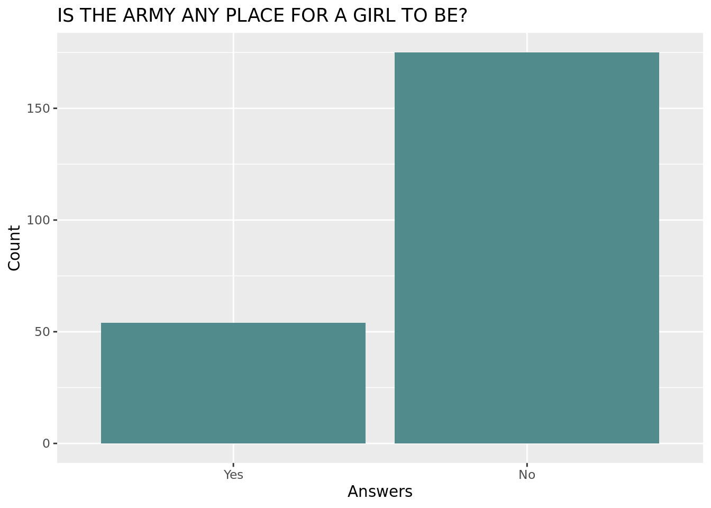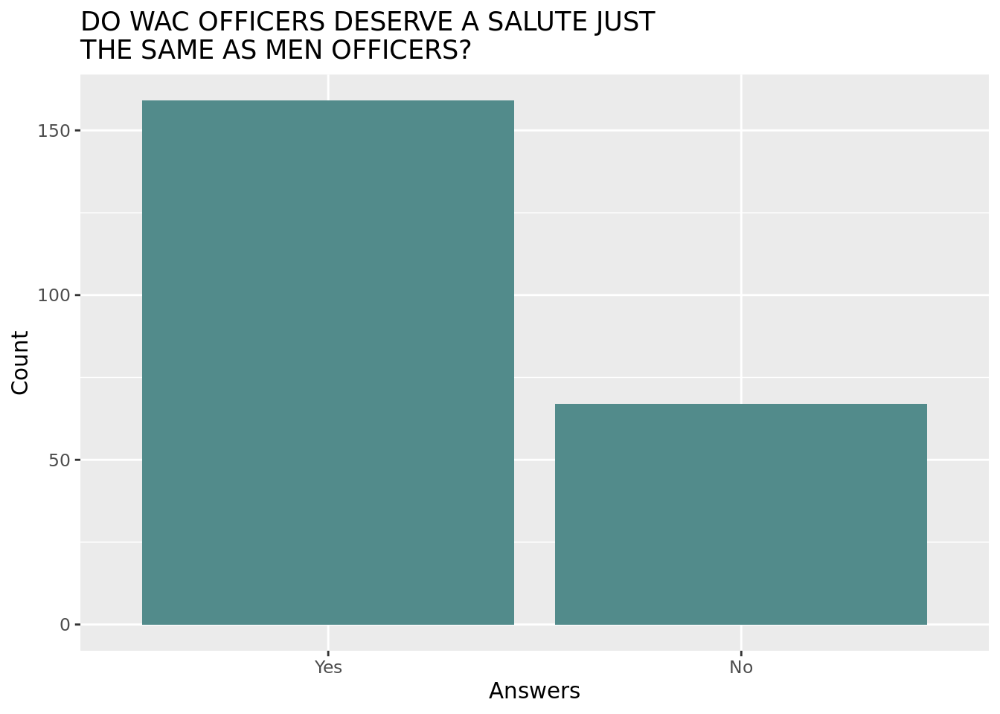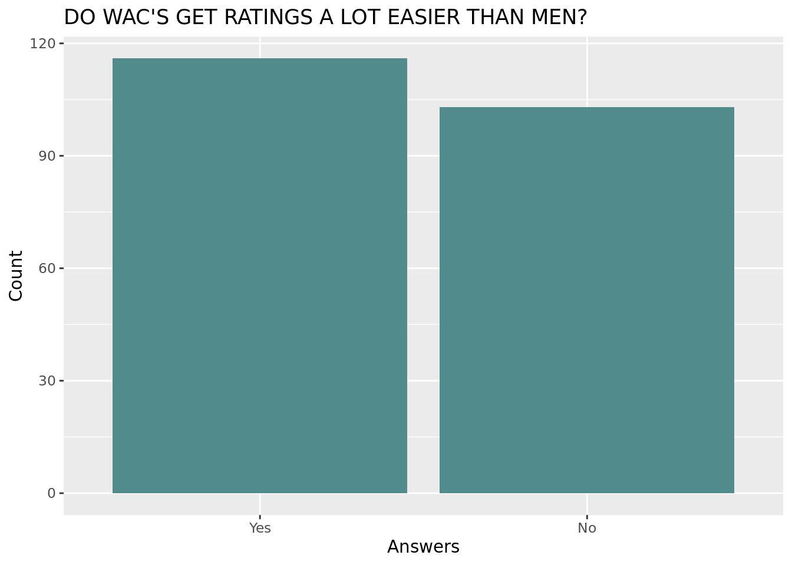